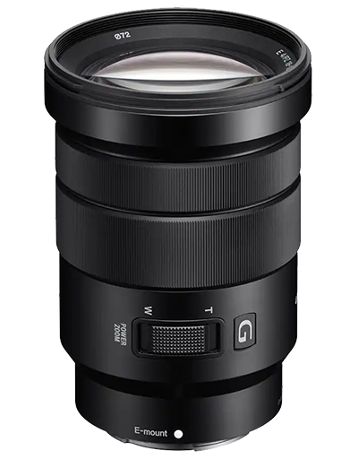
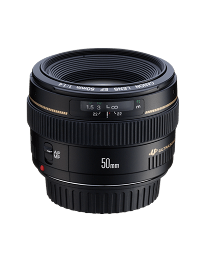
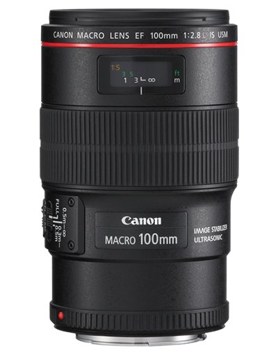
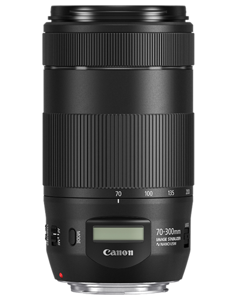
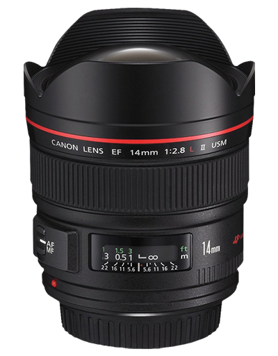
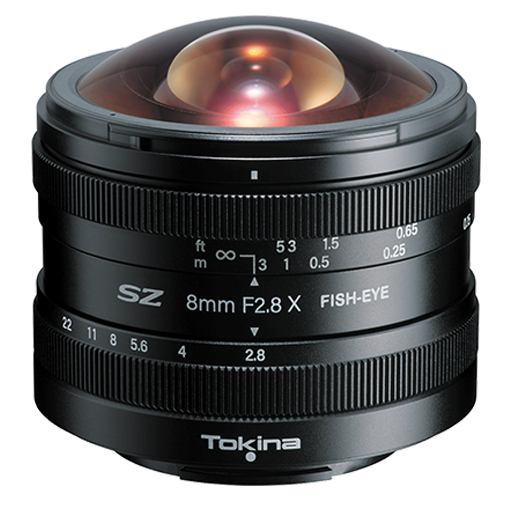

Photography boasts so many creative styles, and all of these exists because of the lenses you can get for your cameras. Different lens types exist to create perspective, like close ups, wide shots, macros etc. So lets look at the classifications and what each of them mean!
| Standard | Prime | Macro | Telephoto | Wide Angle | Fisheye |
|---|---|---|---|---|---|
|  |  |  |  |  |  |
| The standard lens is a basic lens, sometimes with a large focal range, sometimes small. They tend to come with camera bodies as a standard lens, called a kit lens. Often they work well for everything, but some lenses work better in other scenarios. | Prime lenses are lenses at a fixed focal length, like 50mm. They work well with subjects like in portrait photography as they reach lower apertures which can help in creative situations! | Macro lenses allow you to capture strong detail of a super close of subject. Macro lenses are often used to photograph insects, flowers, and other tiny things! The optical quality of macro lenses allow them to see things in a detail that the human eye struggles to see! | Telephoto lenses are a super popular and strong pick for most. A telephoto lens has a rotating portion that extends the lens to capture things from afar. They are mostly used for wildlife and landscape photos. The awesome thing about big focal lengths like 300mm is that the background is enlarged, so mountains behind a subject can look astonishingly massive. | Wide angles are a lesser used but still practical lens style. Wide lenses allow the photographer to capture as much in a photo as possible, making them great for videography, and landscape photography. Most photos of mountains, and oceans are shot on wide lenses as it brings in the whole region, instead of a small portion! | Probably the least used lens on this list is the fisheye. It captures an odd, bloated perspective. While a very unique lens, it has less practical purpose. It is typically the widest lens you can get, but sometimes it is a little too wide! |